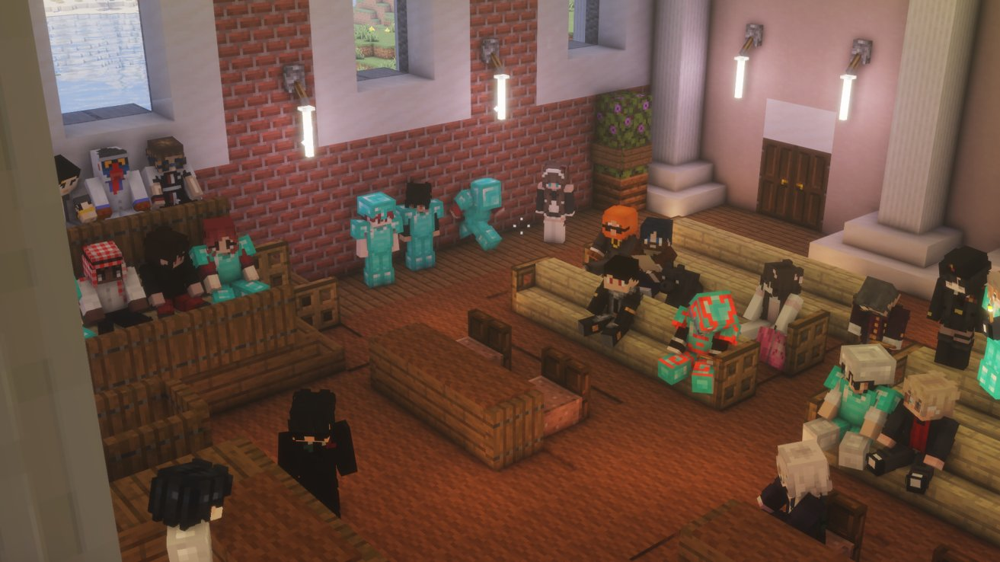
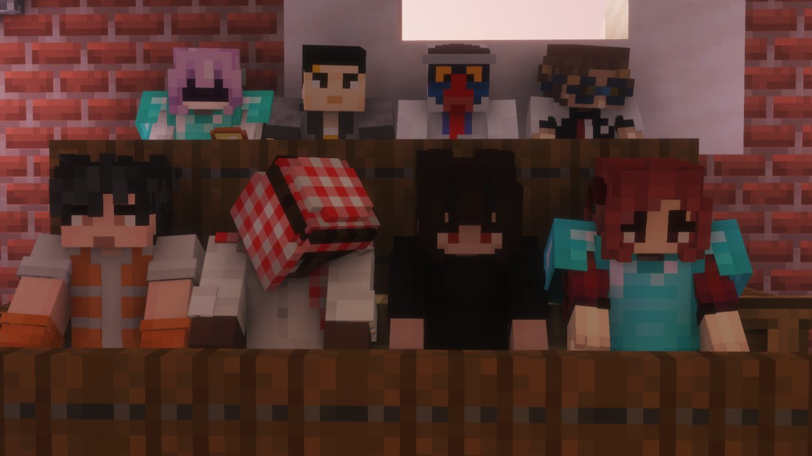

Séance d'urgence au palais de justice : les citoyens prennent la parole sur les bavures policières
Le président convoque une séance exceptionnelle pour donner la parole aux citoyens. Dans une atmosphère lourde, les témoignages se croisent et se renforcent — le malaise dépasse largement quelques cas isolés.

Le président a convoqué en urgence une séance exceptionnelle au palais de justice afin de donner la parole aux citoyens sur les bavures policières qui secouent actuellement Karminéa. Dans une atmosphère lourde, plusieurs témoins sont venus s'exprimer — et pas seulement ceux déjà interrogés par notre rédaction.
Un espace enfin ouvert aux témoignages
Cette séance avait un objectif clair : permettre aux habitants de raconter ce qu'ils ont vu, subi ou constaté. Le président a voulu que la discussion se fasse publiquement, au sein même du palais de justice, pour que les accusations ne restent pas suspendues dans le vide. Plusieurs citoyens ont ainsi pris la parole pour décrire des comportements jugés abusifs, des interventions disproportionnées et un climat de méfiance grandissant envers certains membres des forces de l'ordre.

Des récits qui se croisent
Au fil des interventions, un constat s'est imposé : les témoignages ne viennent pas d'une seule source. Plusieurs personnes, indépendamment de notre interview initiale, ont raconté des faits similaires. Cette convergence donne du poids aux accusations de bavures et montre que l'affaire ne peut plus être balayée d'un revers de main. Pour de nombreux citoyens, il ne s'agit plus seulement de dénoncer des cas ponctuels, mais de demander une remise en question profonde.
Une réponse politique attendue
La convocation de cette séance par le président montre que le sujet est désormais pris au sérieux au plus haut niveau de l'État. En laissant les citoyens s'exprimer, les institutions reconnaissent que la parole publique est devenue nécessaire pour apaiser les tensions et faire avancer la vérité. Reste maintenant à savoir si ces témoignages entraîneront des mesures concrètes, des enquêtes ou des sanctions.
Ce qu'il faut retenir
Cette séance d'urgence marque un tournant : le président a ouvert le débat publiquement, plusieurs citoyens ont témoigné de bavures policières, d'autres voix que celles de notre interview ont confirmé les tensions, et la pression monte désormais pour que des réponses officielles soient apportées.
Le Karmine Déchaîné continuera de suivre ce dossier, car quand les citoyens parlent à plusieurs voix, le pouvoir ne peut plus faire semblant de ne pas entendre.
"Quand la justice ouvre enfin ses portes, les vérités longtemps étouffées finissent par sortir."
— La Rédaction